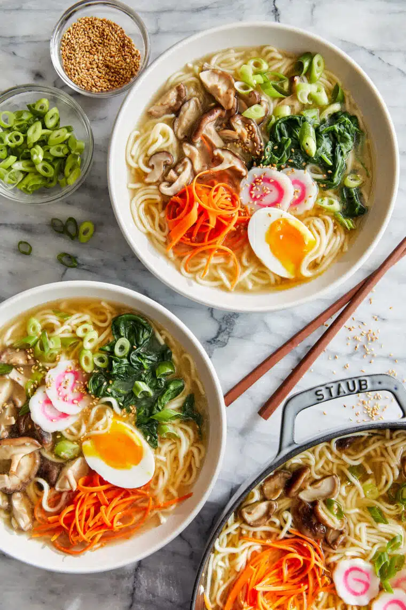

Ramen Recipe
A simple and tasty Japanese food!

How to make a Ramen
Ingredients:
- Large Eggs, 2
- Olive Oil, 1 tablespoon
- Garlic (minced), 4 cloves
- Ginger (freshly grated), 1 tablespoon
- Reduced Sodium Chicken Broth, 4 cups
- Shiitake Mushrooms, 4 ounces
- Reduced Sodium Soy Sauce, 1 tablespoon
- Refrigerated Yaki- Soba (5.6-ounce, seasoning sauce packets discarded), 3 packages
- Baby Spinach, 3 cups
- Narutomaki (optional), 8 slices
- Carrot (grated), 1
- Green Onions (thinly sliced), 2
How to cook:
- Place eggs in a large saucepan and cover with cold water by 1 inch. Bring to a boil and cook for 1 minute. Cover eggs with a tight-fitting lid and remove from heat; set aside for 8-10 minutes. Drain well and let cool before peeling and halving.
- Heat olive oil in a large stockpot or Dutch oven over medium heat. Add garlic and ginger, and cook, stirring frequently, until fragrant, about 1-2 minutes.
- Whisk in chicken broth, mushrooms, soy sauce and 3 cups water.
- Bring to a boil; reduce heat and simmer until mushrooms have softened, about 10 minutes. Stir in Yaki-Soba until loosened and cooked through, about 2-3 minutes.
- Stir in spinach, Narutomaki, carrot and green onions until the spinach begins to wilt, about 2 minutes.
- Serve immediately, garnished with eggs.
Nutrition Facts:
- Total Fat
- 15g
- Saturated Fats
- 5g
- Trans Fat
- 0g
- Cholesterol
- 93mg
- Carbohydrate
- 84g
- Fiber
- 15g
- Sugar
- 4.3g
- Sodium
- 770mg
- Protein
- 19g
Menu:
- Filipino Foods:
- Chinese Foods:
- Dessert: